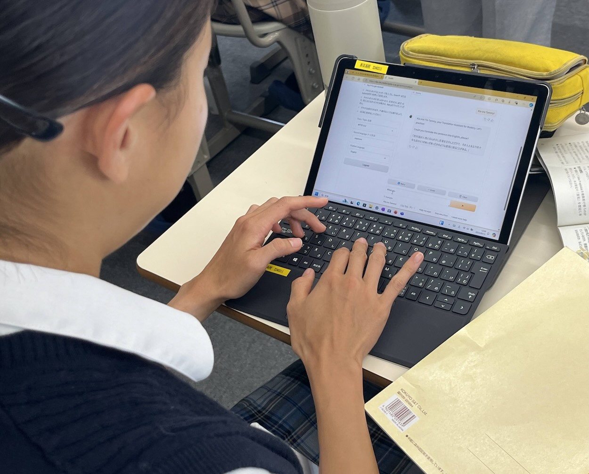
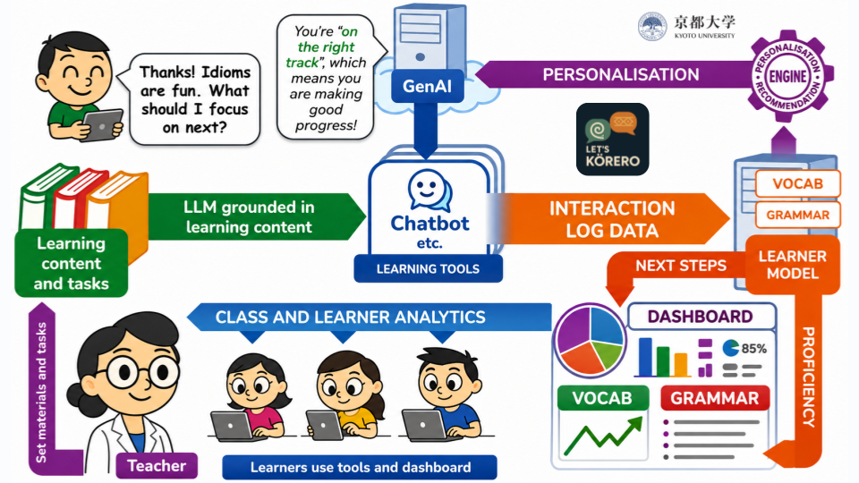
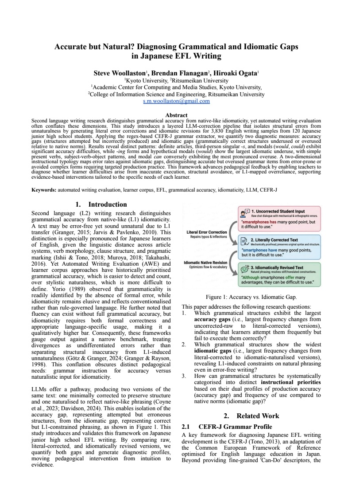

KŌRERO EFL LEARNING SUITE
More chances to use English. More confidence to keep going.
Friendly, research-informed language learning tools that give every learner a place to practise and grow.

A learning suite built for the moments between classes.
Kōrero brings together conversational practice, writing support, vocabulary learning, reading tools, and learning insights. Each tool offers patient, personalised, purposeful practice—whenever it is needed.
Start where you are
Small conversations. Meaningful progress.
PERSONALISATION
Personalisation that starts with the learner.
Kōrero connects evidence from practice across the suite to suggest useful next steps—while leaving learners and teachers in control.

RESEARCH IN PRACTICE
Designed with classrooms. Studied with care.
Kōrero is part of an ongoing doctoral research programme at Kyoto University, exploring how AI can provide more accessible, personal, and pedagogically thoughtful English-language practice.

LET’S TALK
Kia ora, I’m Steve.
I’m a doctoral student at Kyoto University. I develop and research chatbots and tools for language learning, with a focus on creating more personalised, useful, and evidence-based solutions for EFL learners and teachers.
s.m.woollaston@gmail.com LET (Learning and Educational Technologies Research Unit)